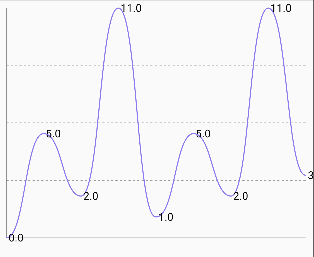
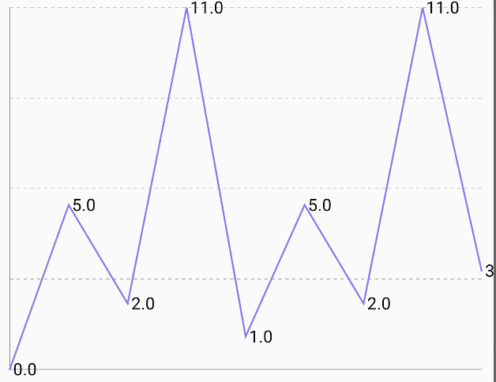
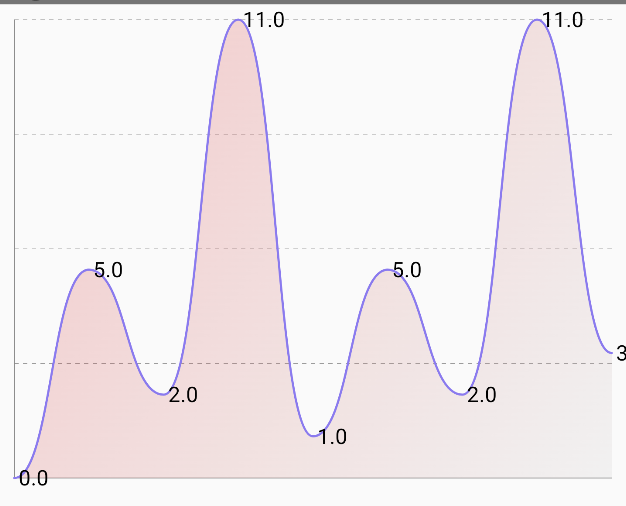

LineChart
| Smooth Line Curve | Pointed Line Curve | Line Filled |
|---|---|---|
 |
 |
 |
🍸Overview
A chart that renders a line chart to visualize continuous or time-series data. Supports various configurations including smooth curves, area fill, stroke lines, interactivity, and targets.
🧱 Declaration
There are two overloaded versions of LineChart, each offering different forms of interaction:
Version 1: With onClick support
@Composable
fun LineChart(
data: () -> List<LineData>,
modifier: Modifier = Modifier,
smoothLineCurve: Boolean = true,
showFilledArea: Boolean = false,
showLineStroke: Boolean = true,
showOnClickBar: Boolean = true,
colorConfig: LineChartColorConfig = LineChartColorConfig.default(),
labelConfig: LabelConfig = LabelConfig.default(),
target: Float? = null,
targetConfig: TargetConfig = TargetConfig.default(),
chartConfig: LineChartConfig = LineChartConfig(),
onClick: (LineData) -> Unit = {}
)
Version 2: With onValueChange support
@Composable
fun LineChart(
data: () -> List<LineData>,
modifier: Modifier = Modifier,
smoothLineCurve: Boolean = true,
showFilledArea: Boolean = false,
showLineStroke: Boolean = true,
colorConfig: LineChartColorConfig = LineChartColorConfig.default(),
labelConfig: LabelConfig = LabelConfig.default(),
target: Float? = null,
targetConfig: TargetConfig = TargetConfig.default(),
chartConfig: LineChartConfig = LineChartConfig(),
onValueChange: (LineData) -> Unit = {},
)
🔧 Parameters
| Parameter | Type | Description |
|---|---|---|
data |
() -> List<LineData> |
Lambda returning a list of LineData points representing x/y values to be plotted. |
modifier |
Modifier |
Optional Jetpack Compose modifier for layout styling. |
smoothLineCurve |
Boolean |
If true, curves between data points will be smoothly interpolated using Bézier or spline curves. If false, straight lines are drawn. |
showFilledArea |
Boolean |
If true, the area under the line is filled with gradient or solid color. |
showLineStroke |
Boolean |
If true, a visible line is drawn over the chart representing the data. |
showOnClickBar |
Boolean |
(Only in version 1) If true, shows a vertical indicator when a value is clicked. |
colorConfig |
LineChartColorConfig |
Defines line stroke color, fill color, gradients, and background. |
labelConfig |
LabelConfig |
Manages display and styling of axis or data labels. |
target |
Float? |
Optional horizontal line to show a benchmark or target. |
targetConfig |
TargetConfig |
Configuration of the target line (color, thickness, label, etc). |
chartConfig |
LineChartConfig |
Controls axis visibility, padding, animation, min/max values, etc. |
onClick |
(LineData) -> Unit |
(Only in version 1) Triggered when a data point is clicked. |
onValueChange |
(LineData) -> Unit |
(Only in version 2) Triggered on drag interactions over the line chart. |
⚠️ Constraints
require(showFilledArea || showLineStroke) {
"Both showFilledArea and showLineStroke cannot be false at the same time"
}
At least one of showFilledArea or showLineStroke must be true, otherwise an
IllegalArgumentException is thrown. This ensures the chart is visible.
📊 Data Model
Each data point in the chart is represented by the LineData class:
data class LineData(
val xValue: Any,
val yValue: Float
)
💡 Example Usage
LineChart(
data = {
listOf(
LineData("Jan", 10f),
LineData("Feb", 40f),
LineData("Mar", 25f)
)
},
smoothLineCurve = true,
showFilledArea = true,
showLineStroke = true,
target = 30f,
targetConfig = TargetConfig(label = "Average"),
onClick = { lineData -> println("Clicked: ${lineData.xValue} -> ${lineData.yValue}") }
)